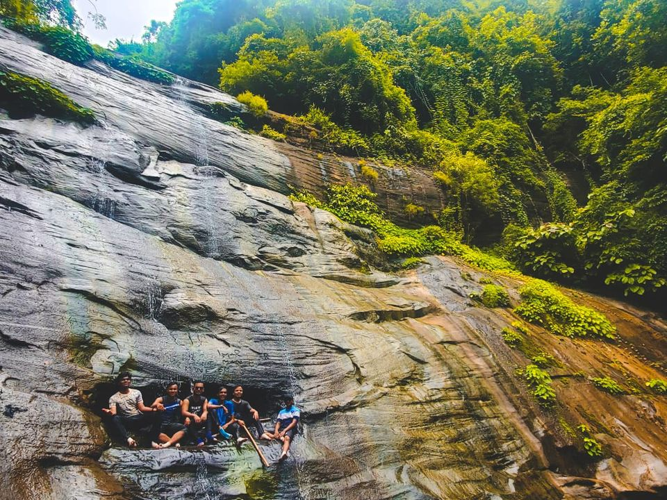
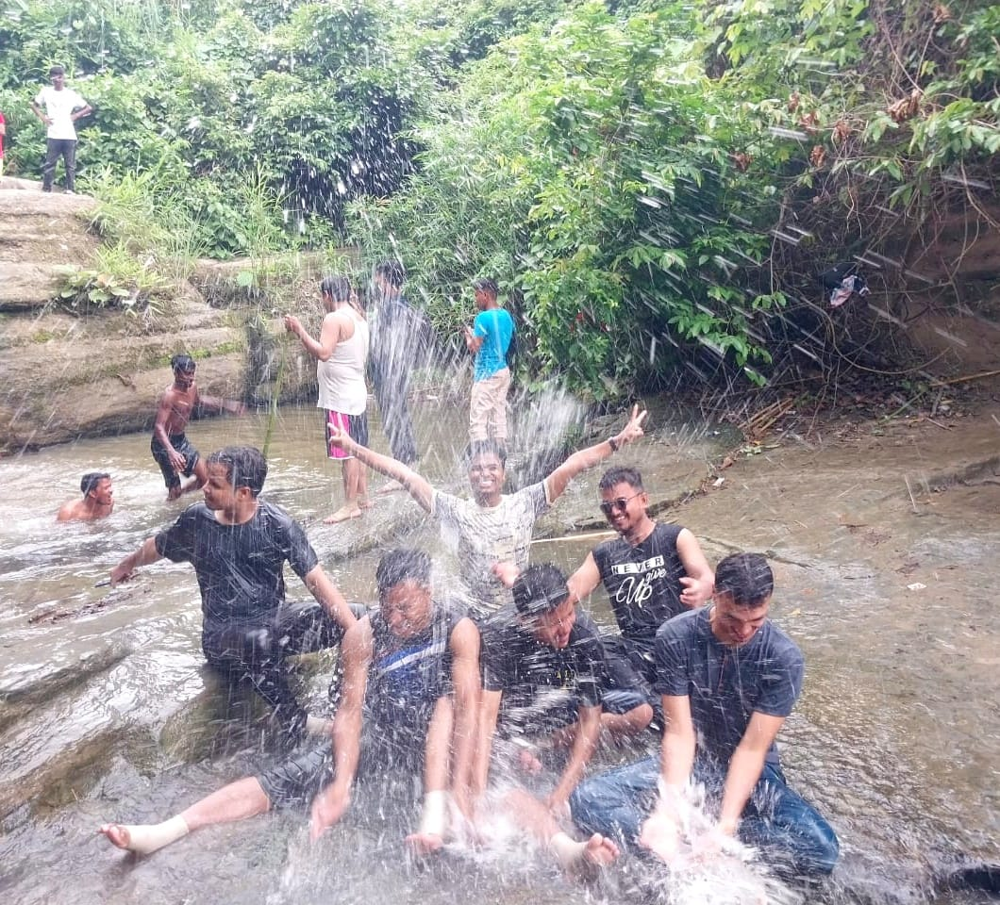

Description of a Waterfall
A waterfall is a geological formation where flowing water rapidly drops in elevation as it flows over a cliff or down a steep incline. The sight and sound of water cascading down can be both soothing and awe-inspiring, making waterfalls popular destinations for nature lovers, hikers, and photographers.
Source and Flow
- River or Stream: Most waterfalls are part of a river or stream system. The water may originate from melting snow, rainfall, or springs.
- Flow Rate: The volume of water flowing over a waterfall can vary dramatically, depending on the season, recent weather, and the size of the river.
Height and Width
- Height: Waterfalls can range from just a few meters to several hundred meters in height. The tallest waterfall in the world is Angel Falls in Venezuela, which drops nearly 979 meters (3,212 feet).
- Width: The width of a waterfall can also vary greatly. Some waterfalls are narrow and plunge down a single, tight stream, while others are wide and create a broad curtain of water.
Types of Waterfalls
Formation
- Erosion: Waterfalls are often formed by the erosion of softer rock layers, leaving more resistant rock layers to create the vertical drop.
- Tectonic Activity: Earthquakes and volcanic activity can also create conditions favorable for waterfall formation by uplifting land or redirecting river courses.
Surrounding Environment
- Vegetation: The area around waterfalls is often lush and green due to the constant mist and humidity, supporting a diverse range of plant life.
- Wildlife: Waterfalls can create unique habitats for various species of plants and animals, including mosses, ferns, insects, birds, and fish.
Human Interaction
- Tourism: Many waterfalls are major tourist attractions, drawing visitors for their beauty and the recreational opportunities they offer, such as hiking, swimming, and photography.
- Cultural Significance: Waterfalls often hold cultural or spiritual significance for local communities and may be featured in folklore and traditions.
Example: Niagara Falls